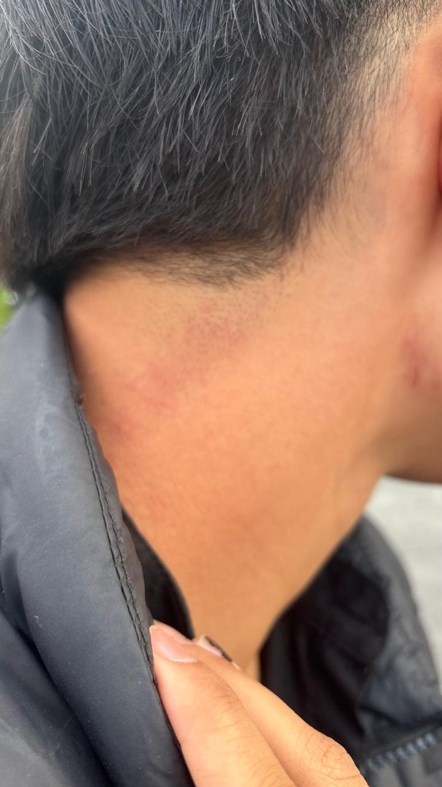
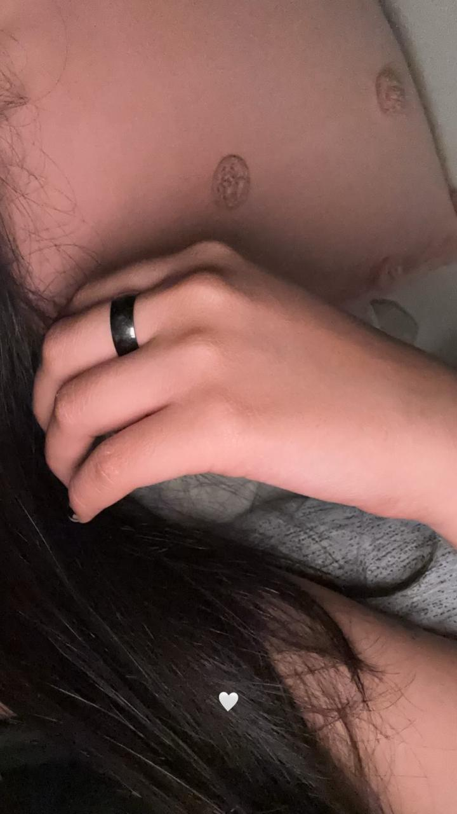
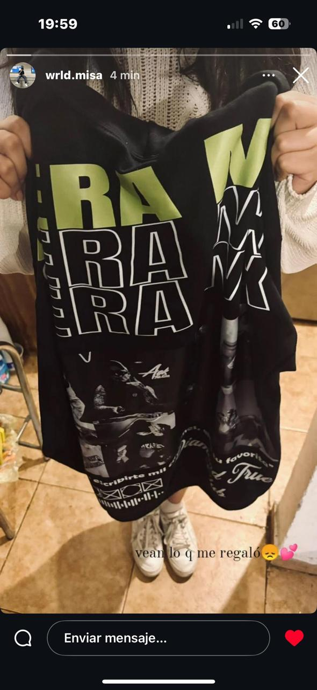

Nuestra relación contada en cachitos💗.
La primera vez que nos conocimos en persona 💫
18 de Octubre del 2024Despues de meses de haber hablado y ligado por mensaje y creo que no pudo haber sido más bonito, aun recuerdo lo nerviosa que estabas y como CASI se nos arruina el plan pq no pude pasar a tu escuelita JAJAJAJAJA

Tambien me acuerdo como pensaste que OTRA me habian hecho esos rasguños y hasta foto me tomaste, cuando yo te dije que era pq me habia rasurado, goserita😞 la verdad yo pensé q eras bn celosa y ya me habia emocionado🥺
Cuando me mandaste esa foto me encantó, me acuerdo que hasta la agregué a mi fondo de pantalla con las fotos de gera, pero es algo que nunca te dije jeje😳 me acuerdo muy bien que tu solita te pusiste mi anillo y te lo empezaste a llevar a la escuela, a partir de ahí me di cuenta que eras una niña muy linda y eso fué algo que me gustó mucho de ti desde el principio
Nuestra primera cita ❤️
2 de Noviembre 2024Recuerdo perfectamente ese día, estuvimos en bosques paseando y besandonos mucho jiji😜, a pesar de que fué algo simple, disfruté muchisimo esa primer salida que tuvimos. Puedo decir con toda la seguridad del mundo que en esa primer cita fue cuando me enamoré perdidamente de ti, y después ese día empecé a pensar mucho en la idea de compartir tiempo contigo como mi novia💗

Una de mis metas es poner este video en nuestra boda y poder apreciar lo mucho que nos amamos desde que estamos jovenes❤️🩹
A partir de esa primera cita, nos hicimos de una bonita costumbre de vernos cada 8 días y a pesar de que actualmente a veces no nos podemos ver cada 8 días, es bontio que cada que podemos, lo hacemos. O incluso si se pude más de una vez, hacemos lo posible por vernos, y eso me sigue gustando demasiado, ya que para mi significa que seguimos teniendo esas ganas de vernos. Y es algo que a la fecha tengo y jamás se me quitará, porque yo quiero seguir viendote por el resto de mi vida💘
Cuando conociste a mi familia 🤍
15 de Diciembre 2024No hay mucho que decir, simplemente creo que en este punto ambos estabamos muy decididos de lo que quieramos y a lo que queriamos llegar. Fué por eso que quise llevarte con mi familia ese día y jamás me arrepentiré de eso, fué muy bonito poder presentarte con mi familia, aunque no como mi novia 100% formal, creo que la mayoria de mi familia ya se imaginaba por qué tu estabas ahí conmigo JAJAJAJAJA, y sin duda el recuerdo más bonito qué voy a tener de ese día, es tu pegandole a la piñata JAJAJAJAJAJA, QUE MONITO
Primer Navidad juntitos ☃️🎄
25 de Diciembre 2024La primer navidad, o post navidad JAJAJAJA que pasamos juntitos creo que fué de las mejores cosas que he podido vivir contigo, recuerdo mucho ir a tu casa un 25 de Dic. y que tus papás nos hayan dejado estar solos en tu casa, eso la veda chi se me hizo achi de "orales" JAJAJAJA, pero tambien estuvo muy bonito, y sobre todo muy rico😜, pero fuera de todo eso, la recuerdo demasiado por los regalitos que nos hicimos de navidad. Y no por el hecho de un valor material, sino un valor sentimental, el valor sentimental que hasta la fecha sigo teniendo por el regalo que me dijiste. Ya que para mi significó DEMASIADO el hecho de que hayas tenido el detalle TAN bonito de regalarme algo que significa demasiado para mi, y poco a poco. Con ese tipo de detallitos, yo me daba cuenta de lo maravillosa y grandiosa niña que eras y eres.
Fotos juntos
contenido
Videos juntos
contenido
Viajes
contenido
Carta
Sorpresa
contenido